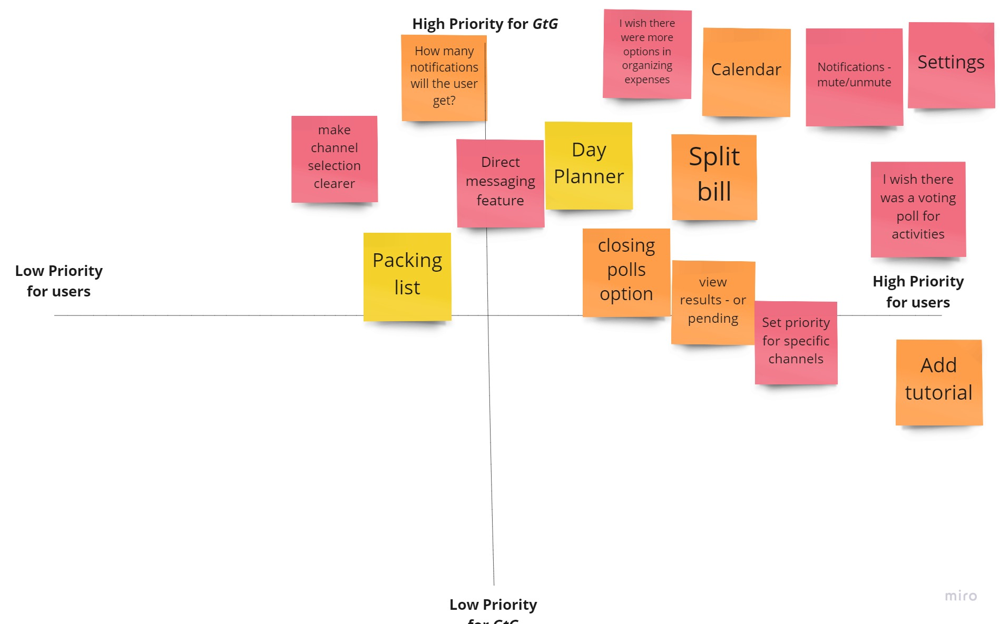

Interview Plan
Research Question
How might we help make vacation plans easier for travelers in a group?
- Objective 1: Learn how groups of travelers communicate.
- Objective 2: Learn about activities travelers do in groups.
- Objective 3: Learn about a group’s financial considerations.
Methodology
We interviewed numerous travelers who shared their opinions on traveling in groups.
Quotes from travelers:
- “It would be awesome if there was a chat system, a group message system that isn’t painful and weirdly formatted.”
-Tasha
- “We had a general framework of what we wanted to do before we started traveling...but it’d be nice if you could have some sort of chat room and could integrate things to do and places to eat.”
-Dan
- “I wish there was a more formal way of deciding whether people wanted to do stuff together or not. Like if there was some kind of Survey Monkey.”
-Beth
- “We usually identify what activities are available, then who wants to do it. Then we work out the schedules and make the reservations.”
-Cary
Problem Statement
GtG (Group on the Go) is designed to achieve better coordination and communication among members of a group of travelers. We have observed that people traveling in groups struggle to set plans when the group members aren’t organized. Members become frustrated and overly stressed which results in a less enjoyable vacation. How might we improve GtG to help travelers who have limited time quickly organize and coordinate vacation goals along with managing the financial obligations while traveling?
User Persona
Feature Prioritization
Key features that were implemented into GtG:
Users enjoy a wide variety of features that can best accommodate their vacation planning.
Instead of one way to return to home, I changed it to a bottom navigation at the bottom. There are multiple features on GtG, so instead of clicking all the way back home, having a bottom navigation would be easier.

User Flow
Conclusion
Users should be able to improve communication and coordination among family and friends through the chat feature, be able to look up and share restaurants and accommodations, and create an itinerary and voting poll to vote on various talking points.
Mockups and Hi-Fi Prototype
.png)